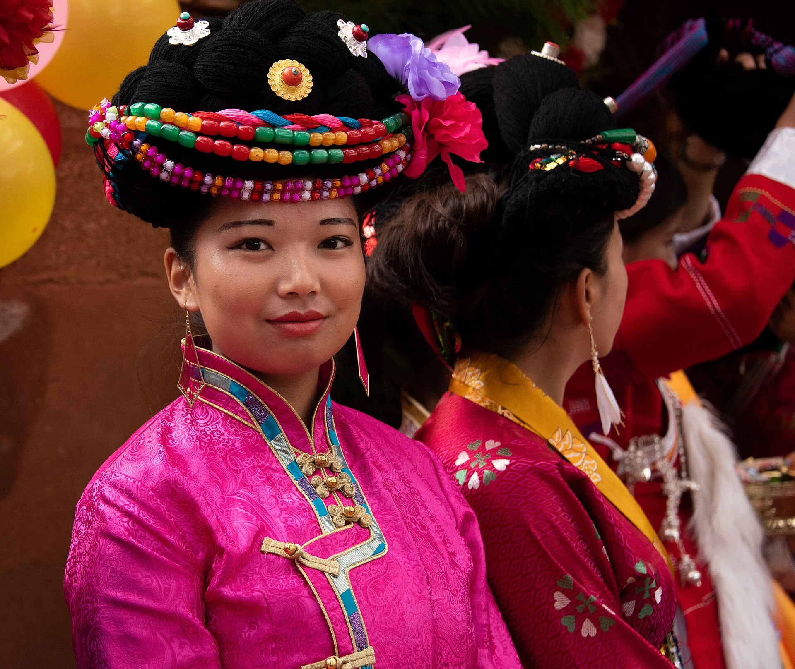
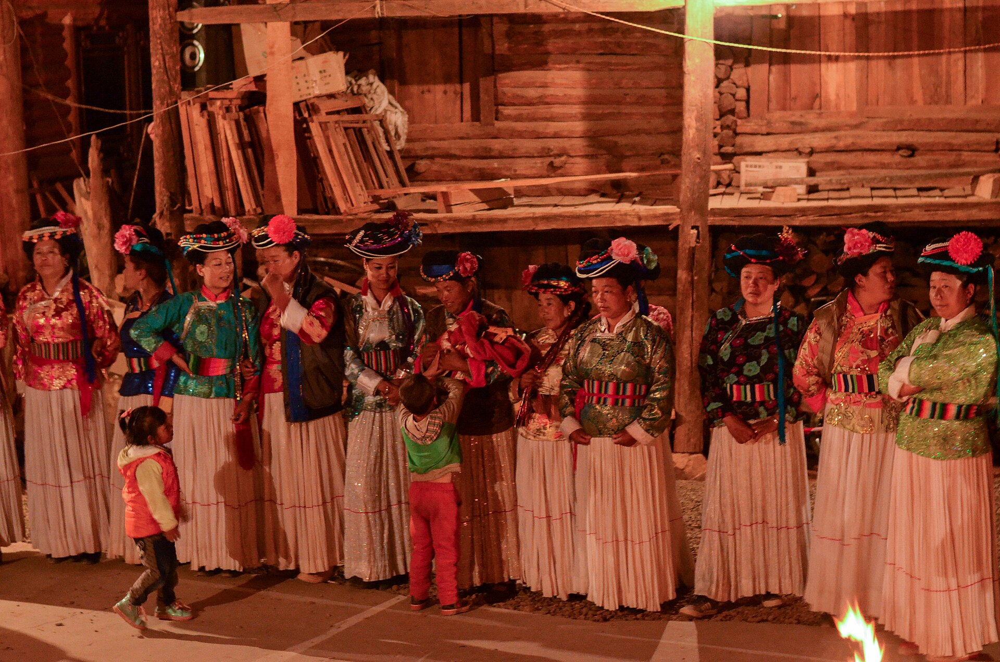

Special Topic · The Mosuo
摩梭人泸沽湖畔 · 母系大家庭 · 一个被过度讲述、又未被真正理解的群体
祖母屋
母系家庭与「阿夏异居婚」
母系大家庭
以同一母系血缘的姐妹兄弟及其子女组成，一般不分家或晚分家。家庭由最年长有威望者任「达布」（当家）主持家务，对外事务与礼仪多由舅舅主持、财产生计由母亲一辈掌管，俗称「舅掌礼仪母掌财」 ；子女随母生活，由母亲家庭共同抚养。
祖母屋 家庭核心
正房，家庭成员围火塘而居。屋内左右两根中柱——女柱「龙杜梅」与男柱「瓦杜梅」须出自同一棵树：同根而生，方成栋梁。
阿夏异居婚 学术表述
学界称「阿夏异居婚」（亦作阿注婚、走访婚），母系氏族对偶婚的遗存形态：「男不娶、女不嫁」，双方各居母家，以感情为基础自愿结交、离异自由；男方暮至晨归，所生子女随母居、由母方家庭抚养，父亲与子女保持认亲关系。血亲之间严禁结交阿夏——规则森严，绝非「随意」。现代摩梭走访婚、同居婚、登记结婚三种形态并存。
花楼与四合院
摩梭民居为井干式木楞房四合院：祖母屋（正房）、花楼（成年女子居所，「阿夏」夜访之处）、经堂、草楼四部分。

母系大家庭的日常Rod Waddington / CC BY-SA 2.0 / Wikimedia Commons 
节庆中的摩梭妇女Peter Olshevsky / CC BY-SA 4.0 / Wikimedia Commons 泸沽湖草海祝鱼贵 / CC BY-SA 4.0 / Wikimedia Commons
当代变化： 在旅游经济与外出务工的推动下，泸沽湖畔的家庭与婚姻形态正在缓慢变化（同居婚与登记婚姻比例上升）。把摩梭文化凝固为「最后的母系氏族」标本，与把它猎奇化为「走婚天堂」，是同一枚硬币的两面——本馆选择呈现变化本身。
湖上旧闻
<
<
猪膘肉 琵琶肉
摩梭人最传统、最具特色的食品，又称琵琶肉：每年冬季祭祖月杀猪时，整猪除头骨外腌制风干，可存放多年——有摩梭人家把它当作传家的「古董」。肥而不腻、肉味清香，是招待贵客的佳肴；篝火晚会上，猪膘肉与苏里玛酒是待客的标配。来源：文旅头条《「古董」猪膘肉》。
<
谢瓦俄岛 土司岛 · 洛克岛
湖中五岛之一的谢瓦俄岛，20 世纪初永宁总管阿云山在岛上修建别墅，故称「土司岛」；约瑟夫·洛克曾在此居住八年，民间至今叫它「洛克岛」。这位《中国西南的古纳西王国》的作者，把泸沽湖称为「上帝创造的最后一块地方」。来源：百度百科「泸沽湖谢瓦俄岛」；南方都市报 2009。
<
洛克线与香格里拉 1924—1933
1924 至 1928 年，洛克四次从丽江出发，经永宁、泸沽湖深入木里与贡嘎岭，写成《贡嘎日松贡布——亡命徒的圣山》刊于 1931 年《国家地理》。1933 年，英国作家希尔顿以他的文章与照片为素材创作《消失的地平线》——「香格里拉」一词由此诞生。这条路的起点，正是泸沽湖畔。来源：维基百科「洛克线」。
<
一湖之深 水文
泸沽湖最大水深 105.3 米、平均水深 40.3 米，湖水库容 22.52 亿立方米，是中国第三深的淡水湖——湖东南长满水草的湿地称「草海」，开阔水面称「亮海」，摩梭人的日子就铺在这两种水色之间。来源：百度百科「泸沽湖」。
<
<
<
去看摩梭文化的两个地方
摩梭人博物馆 云南宁蒗 · 落水村
村民翁慈·尔青与汝亨·慈仁多吉筹资创办（1997 年始建、2001 年开放），2022 年 7 月整修后以「摩梭人博物馆」之名重开，2600 余平方米，展陈祖母屋、花楼、经堂与民俗实物；2019 年云南省博物馆在此挂牌「摩梭民俗博物分馆」。泸沽湖摩梭民俗博物馆另有如视 VR 全馆数字化上线。
盐源摩梭博物馆 四川盐源
2013 年建于泸沽湖镇博树村，系统展示摩梭历史文化的大型博物馆——母系文化的讲述，云南四川各有一馆。
延伸阅读
詹承绪等《永宁纳西族的阿注婚姻和母系家庭》（1980）／严汝娴、宋兆麟《永宁纳西族的母系制》（1983）／严汝娴、刘小幸《摩梭母系制研究》（2012）／周华山《无父无夫的国度？》／施传刚 Quest for Harmony: The Moso Traditions of Sexual Union and Family Life。